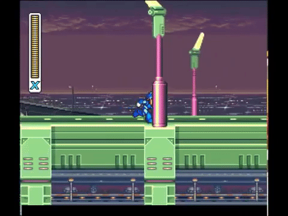

Mega Man
First release: Mega Man; December 17, 1987
- Japanese Name: Rockman
- Created by: Capcom
- Length Range: 1.12 to 1.85 m (3.7 to 6.1 ft)
- Game Director: Akira Kitamura
Mega Man's role in the original story was to be an assistant to his creator Dr. Light. When Light's colleague goes mad, Dr. Light repurposes Mega Man to battle the mad scientist Dr. Wily and his ever-growing army of robots, and stop them from taking over the planet by using their own special abilities against them.